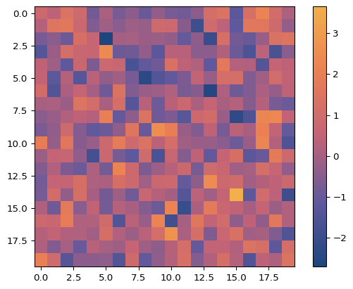
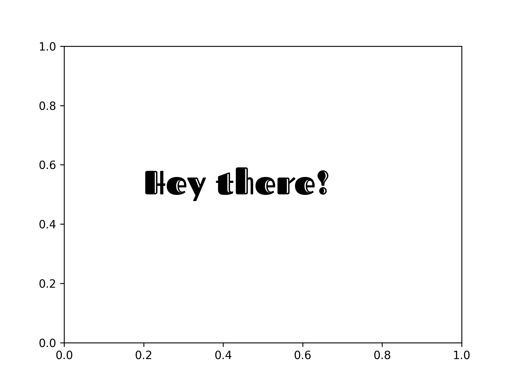
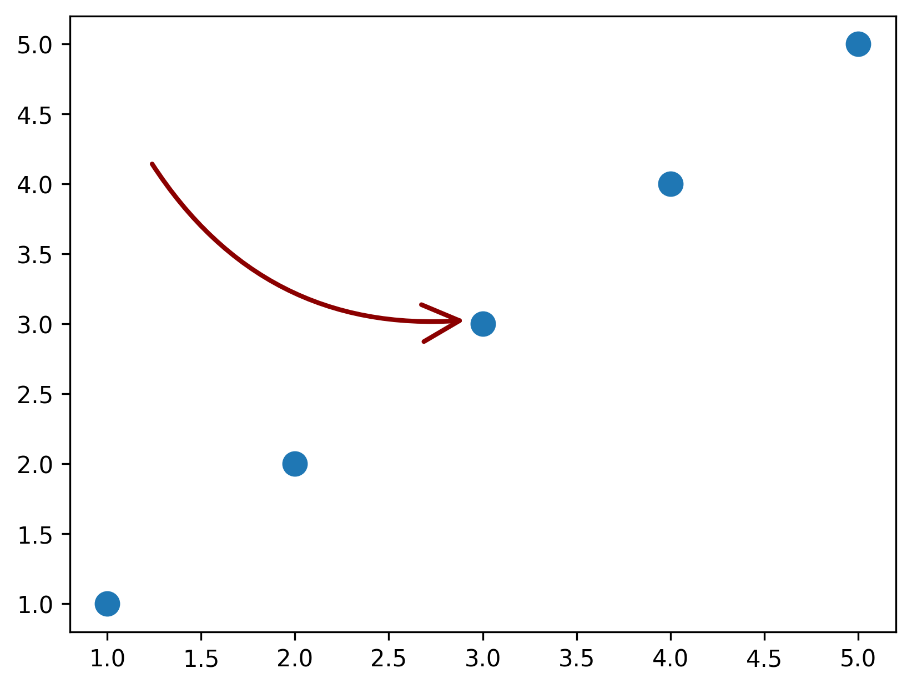
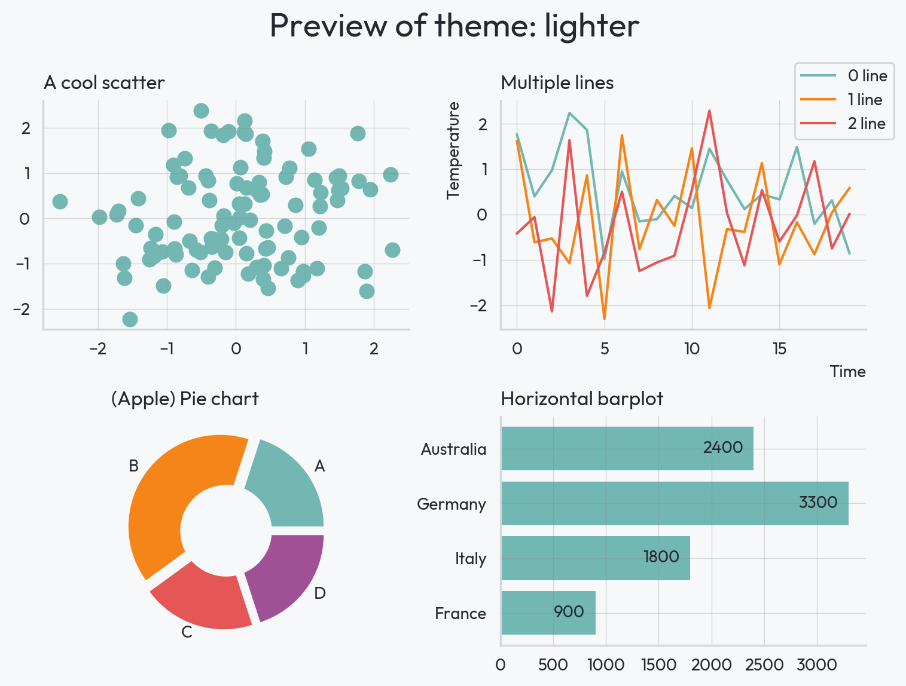
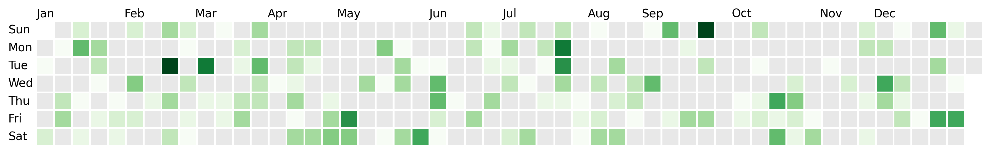

Hi! I'm Joseph
I'm passionate about open-source development and data analysis. I live in France, working as a freelance data scientist and dedicating time to open-source projects.
Work
Consulting
Most of my consultancy work focuses on data science projects, using Python or R. I also work with tools such as Quarto and React. My core expertise lies in data visualization though I handle a wide variety of projects for my clients.
Open source
I contribute to and maintain various packages, primarily in the Python dataviz world. My goal is to simplify data science tasks without compromising on extensive customization capabilities.
These projects are installed more than 50k times a month.
pypalettes: a comprehensive collection (+2500) of colormaps for Python
import matplotlib.pyplot as plt
import numpy as np
from pypalettes import load_cmap
cmap = load_cmap("Sunset2", cmap_type="continuous")
data = np.random.randn(20, 20)
plt.imshow(data, cmap=cmap)
plt.colorbar()

pyfonts: working with fonts in Matplotlib, enhancing ease and reproducibility
import matplotlib.pyplot as plt
from pyfonts import load_google_font
font = load_google_font("Fascinate Inline")
fig, ax = plt.subplots()
ax.text(
x=0.2,
y=0.5,
s="Hey there!",
size=30,
font=font
)

drawarrow: simplifies the process of customizing arrows in Matplotlib (which is harder than you think)
import matplotlib.pyplot as plt
from drawarrow import fig_arrow
fig, ax = plt.subplots()
ax.scatter([1, 2, 3, 4, 5], [1, 2, 3, 4, 5], s=100)
fig_arrow(
head_position=(0.5, 0.5),
tail_position=(0.2, 0.7),
width=2,
radius=0.3,
color="darkred",
fill_head=False,
mutation_scale=2,
)
plt.show()

morethemes: themes for Matplotlib (one line for beautiful graphs)

dayplot: calendar heatmaps in Matplotlib
import matplotlib.pyplot as plt
import dayplot as dp
df = dp.load_dataset()
dp.calendar(
dates=df["dates"],
values=df["values"],
start_date="2024-01-01",
end_date="2024-12-31",
)

gifing: makes creating GIFs straightforward and effortless.